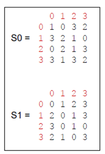

Verschlüsseln
Simple-DES

Schema Simple-DES
Klartext
Pro eingegebenem Buchstaben werden unten (beim Textfeld Umwandlung in Bits) 8 Bits ausgegeben.
Gerade oder ungerade Parität
e eingeben für "Even-Parity" und o für "Odd-Parity". Erklärungen s. Paritätscheck unter Grundlagen und Begriffe.
Umwandlung in Bits
Initiale Permutation
Verschiebung von jeweils 8 Bits an die entsprechenden Positionen.
Beispiel für die Initiale Permutation:
Positionen vor Permutation: 1,2,3,4,5,6,7,8
Positionen nach Permutation: 2,6,3,1,4,8,5,7
Linke Hälfte der permutierten 8 Bits
Rechte Hälfte der permutierten 8 Bits
Expansion
Die rechte Hälfte der permutierten 8 Bits wird expandiert.

Schlüsselerzeugung
Eingabe Hauptschlüssel
Eingabe von selbstgewählten 10 Bits ohne Abstand
Bsp. 1001101000
Permutation
Positionen nach Permutation:
3,5,2,7,4,10,1,9,8,6
1-Bit-Links-Shift/ Rotation

Permutation
Die ersten beiden Bits werden ausgelassen. Die restlichen 8 Bits werden an folgende Positionen gebracht:
6,3,7,4,8,5,10,9
Dies ist nun der erste Schlüssel.
XOR-Verrechnung mit Schlüssel
Hier ein Beispiel der XOR-Verrechnung mit 4 Bits:

Verrechnung mit S-Boxen
Zunächst werden die 8 Bits, welche mit dem Schlüssel XOR-verrechnet wurden, in der Mitte aufgeteilt. Anschliessend werden jeweils die inneren beiden Bits mit den Spalten und die äusseren beiden mit den Zeilen der S-Box verglichen. Es werden nun die zwei Bits ausgewählt an der Stelle wo sich die Zeilen und Spalten treffen. Zum Schluss werden die beiden Hälften wieder zu 4 Bits zusammengefügt.
Dies sind die zwei S-Boxen des Simple-DES:
Permutation
Die 4 Bits die nach der S-Box verrechnung ausgegeben werden, werden hier folgendermassen permutiert:
2,4,3,1
XOR-Verrechnung mit linker Hälfte
Der Wert nach der Permutation wird mit der linken Hälfte vom Anfang XOR-verrechnet.
Nun wird gemäss Schema die 4 Bits nach der XOR-Verrechnung genommen und als rechte Hälfte gespeichert. Währenddessen wird die rechte Hälfte vom Anfang neu als linke Hälfte gespeichert. Die neue rechte Hälfte wird nun mit demselben Prinzip wie vorher verrechnet, mit dem einzigen Unterschied, dass der Schlüssel diesmal bei der Rotation einen 2-Bit-Links-Shift erfährt und sich so vom ersten unterscheidet.
Zum Schluss werden die beiden Hälfte zusammengefügt und es wird die zur initialen Permutation inverse Permutation durchgeführt:
Inverse Initiale Permutation
Dies ist nun der verschlüsselte Text in ASCII-Code
Chiffrentext
Dies ist der verschlüsselte Buchstabe.